Forager's Ration

+6 Max HP
It survived the ruins. You probably will too.
How to get itNothing to earn. It is in the pool from your first run.
Stack ceiling8
Arena draftIncluded
Canonical stat payload 1
maxHp- 6
Small things you pick up, and keep picking up.
Enter at least two characters to search.
A relic is a find you can take again and again until it hits its ceiling. Of the 94 here, 34 are in your pool from the first run, and the other 60 sit behind two doors: playing enough puts one on the shop shelf, and gold is what takes it off.
No relic has a letter grade here. Grading one would mean first deciding which build it is sitting in and what the chests cost that run, and neither of those has been measured, so a ladder would be a guess said with a straight face. Every relic in the game is on this page. The order they sit in is not a ranking.
Drawn with weight 44 out of 100.
+6 Max HP
It survived the ruins. You probably will too.
maxHp
+2% Attack Speed
It works. It has not agreed to work for you.
atkSpeed
+3% Damage
Unstable means enthusiastic.
damage
+4% Projectile Speed
It sparks in the useful direction.
projSpeed
+3% XP Gain
Most of the warnings are underlined twice.
xpGain
+2% Crit Chance
The previous owner was less lucky.
critChance
3% less damage taken (diminishing)
A permanent solution until it falls off.
armor
+4% Gold Gain
Accepted everywhere. Disputed everywhere. Spent everywhere.
goldGain
+4% Pickup Range
Items within its glow are considered found. This is a legal position, not a physical one.
pickup
+0.2/s Regen
Patched often. Abandoned never.
regen
+4 Shield Capacity
Catches trouble before trouble catches you.
shieldCap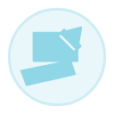
+25% Damage; your weapons can never evolve this run
Big damage now. Your weapons can never evolve this run.
damageflags+0.10 armor rating while your shield is full
While your shield is full you take much less damage. Only kills refill it.
condStats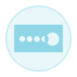
Every 10th chest refunds its price
Every tenth chest gives you your money back.
perChest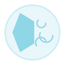
4m self-impulse on slam
Your Whomp throws you backwards, which is occasionally what you wanted.
slamMod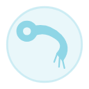
+20% Damage while airborne
You hit harder while your feet are off the ground.
condStats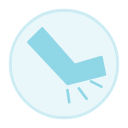
+12% Damage inside 3m
Things standing right next to you take more.
hitScalar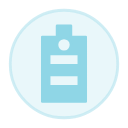
+10% Move Speed, -12% Max HP
You are faster. You are also new here.
moveSpeedmaxHpMult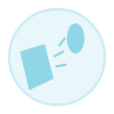
6 gold per hit taken
Getting hit is billable.
onDamagedDrawn with weight 14 out of 100.
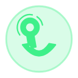
A window after a hit refunds your next Boost charge (1.5s / 2.5s / 4s by stack)
Your first Boost after taking a hit costs no charge.
onDamaged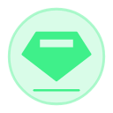
Every 10th kill drops a second gem (8th / 6th by stack)
Every tenth enemy you kill drops a second gem.
everyNthKill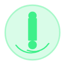
Uncollected pickups drift to you after a 3s dwell
Gold and gems you leave behind start drifting toward you after a few seconds.
flags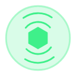
A shield break radially shoves nearby enemies
When your shield breaks it bursts, and shoves back whatever broke it.
flags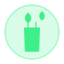
Burn spreads to 1 neighbour
Your Burn spreads to one enemy standing beside the one that is burning.
burnSpread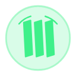
3 crits on one target staggers it
Three crits on the same enemy stagger it.
critTally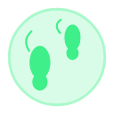
A smouldering trail follows you
The ground behind you smoulders while you run.
groundField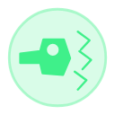
Summoned helpers retarget to your last hit for 4s
Your summoned helpers chase whatever you hit last.
packWhistle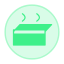
1.5 HP/s after standing still 2s
Stand still and you start to heal. Move and it cools.
condStats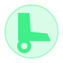
1 gold per 40m travelled
You are paid by the metre. Someone is keeping count.
economyTick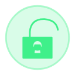
The first chest on every floor costs nothing
The first chest on every floor is free.
perChest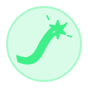
+50% affliction strength, -50% duration
Your Burn, Freeze and Shock hit harder and end sooner.
statusPowereffectDuration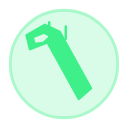
+40% slam damage, 1.0s Boost lockout after landing
Your Whomp lands much harder. You cannot Boost for a moment after.
slamModDrawn with weight 27 out of 100.

+6% Effect Duration; a Slow/Freeze that expires on an enemy reapplies itself once, free
A moment lingers inside long after it ends.
effectDurationstatusEcho
+5% Weapon Size (stacking); at 4 stacks, every hit knocks back
Everything tied with it grows ambitious.
weaponSize
-6% Boost Cooldown; a kill while boosting fully refunds the charge
Grip the world. Push off sooner.
boostCd
+3% Move Speed; climbs the longer you go unhit (resets on a hit)
Sponsored. Definitely not FDA approved.
moveSpeed
-8% Merchant Prices (cap -24%)
The mark of a customer worth keeping.

Burn/Freeze/Shock +10% duration
Every affliction leaves an echo.

Enemy projectiles 6% slower
Half atmosphere, half fire hazard.

+5% double XP-gem chance
One lesson, occasionally learned twice.

+8% XP / -4% Gold gain
Knowledge accrues. So does debt.
xpGaingoldGain
+12% dmg to bosses / +8% dmg from them
It makes powerful enemies take you personally.

+1 ghost soft-cap
There is always room for one more ghost.
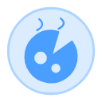
Aggro radius up, kills drop 2x gold and gems
It smells. Everything comes. Everything that dies pays double.
flags-12% Move Speed; immune to knockback and stagger
You are slower. Nothing can move you. Nothing.
moveSpeedflags60% of damage taken is stored (capped) and returned on your next hit
Damage you take is stored, and your next hit gives it back.
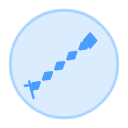
+1% Damage per metre of range, capped at +30%
The further away the target, the harder you hit it.
hitScalar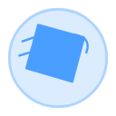
The first 4 HP of a hit lands in full; the rest at 30%
The first slice of every hit gets through. The rest barely does.
damageDeductible+1% Gold Gain per 10s held, resets on spend
Gold you don't spend grows. Spending resets it to nothing.
economyTickEvery 7th shot fires from a different weapon
Every seventh shot comes out of a different weapon.
+15% Damage while moving; 3s standing still triggers a shove and 5 damage
Stand still and the ground turns on you. Keep moving and you hit harder.
condStatscondStats 2Once per run, a boss-only lethal hit sends you back to the door instead
Fall to a boss and you get one more go from the door, the boss keeping the health it had left.
lethalSave+2% Luck per chest opened, for the run
Every chest you open makes you luckier, for the rest of the run.
perChest+2.5% Damage per chest opened, for the run
Every chest you open makes you hit harder, for the rest of the run.
perChest+0.1% Damage per kill, capped at +100%
Every kill makes you angrier. It does not wear off.
killRamp25% of crits heal you for 10% of the hit
Your crits sometimes give the wound back to you.
critExtraOne rabbit every 200m runs ahead for 8s, slowing what it crosses
Walk far enough and a see-through rabbit catches up, then runs ahead tripping what it passes.
groundFieldAbsorbs one hit, relights after 30s
A lantern floats at your shoulder. One hit goes out on it instead of you.
lethalSaveThe first hit within 0.6s of a Boost deals 2.5x and staggers
Come out of a Boost and the first thing you touch regrets it.
hitScalar+35% Damage, -40% Max HP
You hit much harder. You should not be hit.
damagemaxHpMult+80 gold on pickup; chest prices +15% for the run
A bag of gold now. Every chest after costs more.
perChestDrawn with weight 12 out of 100.

+10% Damage / -5% Max HP
Power has borrowed space from safety.
damagemaxHpMult
Burn ticks +30% / +10% contact dmg taken
The heat is excellent. The shielding is decorative.

Shockwave knockback every 12s
It beats once. The ground answers.

+20% Move Speed 2s after a hit
Pain becomes distance.

10% of gold pickups also drop XP
It values wealth almost as much as wisdom.

7% less damage taken (diminishing), +10% Weapon Size / -5% Move Speed
Subtlety was removed to save weight.
armorweaponSizemoveSpeed
+18% Attack Speed / -10% Move Speed
Fast hands. Narrow focus.
atkSpeedmoveSpeed
Every 5th crit roll on your weapons is a guaranteed crit (the aimed core rolls its own); +8% Crit Damage
One perfect strike settles most arguments.
critDamageguaranteedCritEveryYour weakest weapon fights at your strongest weapon's rank
Your worst weapon fights like your best one.
All weapons fire together on the slowest cadence; +20% volley damage
All four weapons fire at once, on the slowest one's clock.
flags100% off prices; billed every 60s, shortfall taken from HP
Everything is free. The bill arrives every minute, and it is not optional.
economyTick15% of kills explode in a 4m blast that also hurts you
Some of the things you kill go off. It does not check who is nearby.
everyNthKill5s to land 8 kills and stay up, once per run
The hit that kills you gives you five seconds to argue.
lethalSaveOn a chest, a coin flip trades a relic one rung up or takes it
Seen your relic? Flip for a better one, or lose it entirely.
perChestOn run end, unlock one held relic in the shop (still costs its rung price)
When the run ends, one relic you held is unlocked in the shop, earned or not.
flagsEvery 20s, a 1.5m crater lands and burns for 6s
A piece of the sky that is still warm. Every so often it falls where you are aiming.
timedStrike+0.25 armor rating, +40 Max HP, -18% Move Speed
Much tougher. Much slower.
armormaxHpmoveSpeed15% of crits also hit again at 2.5x
Sometimes a crit crits again.
critExtraOne orbiter arcs to a target within 4m every 1.2s, chaining to 3
A live wire orbits you and arcs to whatever comes close.
groundFieldEvery 45s the Whompus slams the biggest enemy within 12m for 8x weapon damage and staggers it
Every so often the Whompus drops out of the sky onto the biggest thing nearby. It has been asked to look first.
timedStrikeDrawn with weight 3 out of 100.

Revive once per run at 50% HP
Death gets one objection.

+2% Damage; Evolved weapons a further +10%, un-evolved weapons a further +5%
Every final form remembers this design. The design has notes.
damage
+12% Move Speed, +1 Boost Charge
It points toward somewhere worth reaching quickly.
moveSpeed
+25% Gold, chest costs escalate 25% slower
Your prices were agreed a long time ago. Nobody has been able to locate the agreement.
goldGainSlam radius x2, slam damage x2.5, camera kick
Your Whomp becomes absurd.
slamMod4s world-stop, you keep 1 HP, once per run
The blow that would kill you stops the world instead.
lethalSaveEvery proc chance rolls a second time
Every chance you have rolls twice.
flagsA slow whole-floor pull on gold and gems
Everything worth having on the floor gets up and comes to you.
flags+0.5% Damage per soul, staged at 40 / 120 / 250 kills, never decays
Everything that dies near you is put to work, and your weapon remembers.
killRamp+0.20 armor rating; a 3m ring deals 20 damage per second
You are much harder to kill, and standing near you is a mistake.
armorgroundField+25% Move Speed, 2x Damage under 50% HP
Below half health you are faster and you hit twice as hard.
condStats10% of hits draw an 8m line that burns for 5s
Your hits sometimes draw a line of fire across the world, and it stays lit.
groundFieldEvery 40s, a 4.6s arc lands a 5.5m crater that burns and slows for 30s
Now and then a star crosses the sky and comes down on the thickest part of the crowd. The crater stays hot.
timedStrike